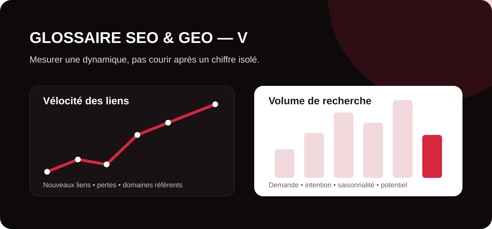

Les indicateurs SEO deviennent réellement utiles lorsqu’ils sont replacés dans leur contexte. La vélocité des liens aide à observer la dynamique d’acquisition de backlinks, tandis que le volume de recherche permet d’estimer la popularité d’un sujet ou d’une requête. Aucun des deux ne doit cependant être interprété comme une garantie de positionnement ou de trafic.

velocite des liens
La vélocité des liens désigne l’évolution du nombre de backlinks acquis ou perdus par un site au fil du temps. Elle peut être étudiée sur quelques jours, plusieurs semaines ou plusieurs mois afin de comprendre si le profil de liens progresse régulièrement, connaît un pic soudain ou, au contraire, perd des domaines référents.
Cette notion est surtout un indicateur d’analyse. Une augmentation rapide du nombre de liens n’est pas automatiquement positive ou négative : une marque citée dans la presse, une étude devenue virale ou un lancement de produit peuvent naturellement provoquer un afflux de backlinks. L’origine, la pertinence éditoriale et la qualité des pages qui créent ces liens sont plus importantes qu’une vitesse arbitraire à respecter.
Comment analyser la vélocité des backlinks ?
Un audit peut suivre les nouveaux liens, les liens perdus, les domaines référents, les ancres, les pages de destination et la chronologie des acquisitions. L’objectif est d’identifier des tendances : campagne de relations presse efficace, progression d’un contenu de référence, perte de partenaires ou apparition d’un ensemble de liens artificiels.
Google considère comme spam les liens créés principalement pour manipuler le classement, notamment certains achats de liens, échanges excessifs ou dispositifs automatisés. Il est donc préférable de construire une stratégie de netlinking autour de la pertinence, de la valeur éditoriale et de la diversité des sources, plutôt que de chercher à atteindre un nombre fixe de backlinks par semaine.
volume de recherche
Le volume de recherche estime combien de fois un mot-clé ou une requête est recherché sur une période donnée, généralement sous la forme d’une moyenne mensuelle. C’est l’un des indicateurs les plus utilisés lors d’une recherche de mots-clés pour évaluer la taille potentielle de la demande.
Dans Google Keyword Planner, la métrique « recherches mensuelles moyennes » dépend notamment de la période, de la zone géographique et du réseau sélectionnés. Par défaut, Google peut présenter une moyenne basée sur douze mois et inclure des variantes proches. Il faut donc lire ce chiffre comme une estimation de demande, et non comme un compteur exact du nombre de visiteurs qu’une page peut recevoir.
Un gros volume est-il toujours préférable ?
Non. Un mot-clé très recherché peut être extrêmement concurrentiel, vague ou éloigné d’un objectif commercial. À l’inverse, une requête de longue traîne avec un volume limité peut traduire une intention beaucoup plus précise. Une stratégie SEO performante croise donc le volume avec l’intention de recherche, la pertinence pour l’offre, la difficulté, le potentiel de conversion et la place du sujet dans le parcours client.
Volume, saisonnalité et potentiel GEO
Une moyenne annuelle peut masquer des pics saisonniers. Il est utile de compléter l’analyse par l’évolution mensuelle, les tendances, les données de Google Search Console et les performances réelles du site. Dans une approche GEO, le volume classique reste utile pour comprendre la demande, mais il ne mesure pas directement la fréquence à laquelle une marque ou une source est citée dans une réponse générée par une IA.
Tableau de synthèse : les notions en V
| Terme | Ce qu’il mesure | Utilité | Limite principale |
|---|---|---|---|
| Vélocité des liens | Évolution des backlinks et domaines référents dans le temps. | Détecter tendances, gains, pertes et anomalies du profil de liens. | La vitesse seule ne permet pas de juger la qualité ou le caractère naturel des liens. |
| Volume de recherche | Estimation de la fréquence de recherche d’un mot-clé sur une période. | Dimensionner la demande et prioriser les opportunités éditoriales. | Ce n’est ni une prévision de trafic ni un indicateur direct de conversion. |
Transformez vos données SEO en décisions utiles
MinoSeo analyse vos opportunités de mots-clés, votre profil de backlinks et vos pages prioritaires afin de construire une stratégie SEO et GEO cohérente avec vos objectifs business.
Demander un audit gratuit